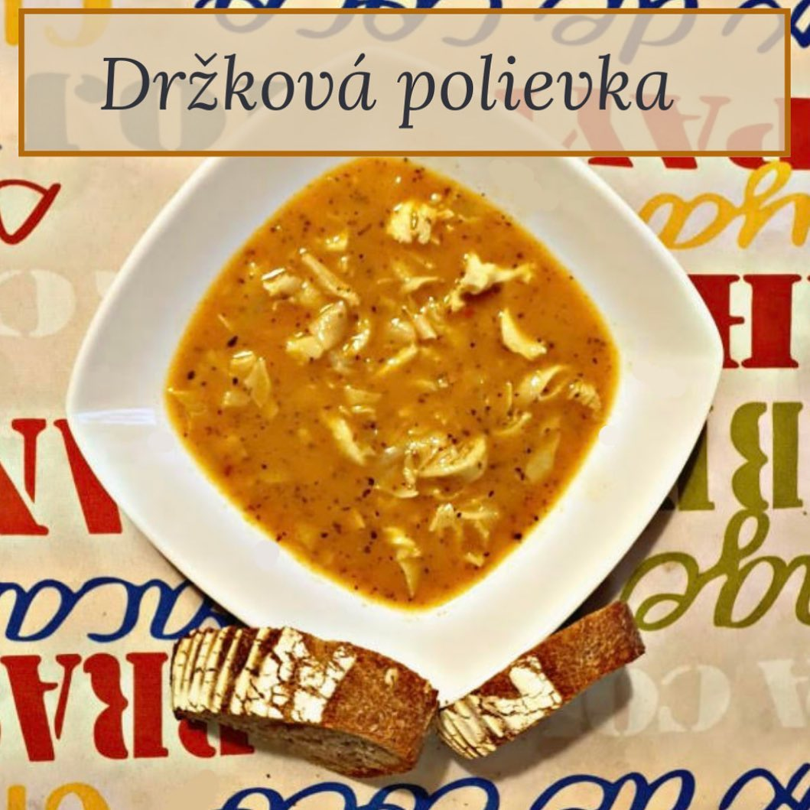

Držková polievka podľa @ilviaggiordomo — Normy Jedál
Venerdì, #viaggiacomemangi
📍🗺
Di viaggio in Slovacchia 🇸🇰, per assaggiare questa squisita zuppa di trippa. Il piatto lo potete trovare anche nella vicina Repubblica Ceca.
INGREDIENTI:
- due cucchiai di strutto
- un aglio 🧄
- una cipolla 🧅
- 500 grammi di trippa precotta
- maggiorana qb
- paprika dolce qb
- cumino qb
- sale 🧂 qb
- pepe qb
- brodo di carne
- farina qb (per infarinare la trippa)
PROCEDIMENTO:
- Far soffriggere con lo strutto la cipolla e l’aglio.
- Infarinare la trippa e aggiungerla nella pentola insieme al soffitto.
- Aggiungere le spezie, il brodo e lasciar cuocere per un’ora e mezza circa. ⏲
- Servire caldo e accompagnare con fette di pane 🥖 🍲
Buon appetito! 🧑🏻🍳
Ringraziamento speciale a Gabriela
.
.
.
#ilviaggiordomo #slovacchia #drzkovapolievka #ricettedalmondo #buonappetito #foodporn #torneremoaviaggiare #food #fame #travel